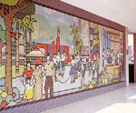

呂清夫 撰文

說來你或許不信，日本兒童喜歡上學的最大原因是，去學校吃一餐營養午餐。這個午餐係由官方供應，家長只交三十%的費用，由於從幼稚園到中學都由地方政府統一供應，菜色相同，所以一家如有幾個小孩同時上學，那麼，他們放學後回家的最佳話題便是，談學校的營養午餐，即使兄弟姊妹分散在中小學、幼稚園，也可以談得一拍即合。這個營養午餐在每個月底，都會發給學生一張全月份的菜單，上面除了菜名飯名之外，每餐都詳細分類，哪些食物可提供熱能（主食），哪些食物可生血長肉（主菜），哪些食物可增進健康（蔬菜）。不僅如此，每餐都註明，這一餐飯含有多少卡路里，含有蛋白質多少公克，當然，這些營養量都按照每個學童的平均需要量來分配，避免營養過與不及。由於日本人作菜從家庭開始，每一樣作料都秤過才下鍋，所以計算卡路里相當方便。營養午餐菜色繁多，在一個月內，每天都不相同，每餐都很熱鬧。至於各個月份則大同小異，如遇到從未吃過的新菜，則菜單上會特別註明，以促食慾。其菜色之所以繁多，乃因洋風、和風、中國風的料理無所不包，同時最吸引小孩的是，有些飯菜可以自己動手包一包，故兒童可以享受動手的樂趣，在官方又可減少人力的開銷。這些飯菜中，最受歡迎的有三，一是漢堡三明治，其中土司麵包一片厚達三公分，兩片六公分，漢堡（肉）二公分，起士、哈姆和生菜合計兩公分，合起來一塊是厚達十公分的三明治，所以小孩飯前可用堆積木的心情，堆出一份必須用手一壓再壓的大餐。其中再佐以玉米濃湯及應時水果，小孩莫不垂涎三丈。其二是蛋包飯，小孩可在薄煎的蛋皮上包以自己喜歡的番茄汁炒飯，包好之後，還可以在蛋皮上用番茄汁擠些圖畫出來，有的吃又有的玩。其三是手捲壽司，每個人可分到五塊十公分見方的海苔，先把海苔捲成冰淇淋筒般的三角錐，然後自由地裝上飯菜，每人一捲在手，真是其樂無窮。綜合地看，每餐都有牛奶，並幾乎都有水果和湯，至於比薩、通心麵、中國炒飯之類，更是家常便飯，每餐大約都有六、七樣東西上桌，往往弄得餐盤都擺不下去。這些飯菜最令人擔心的大約是衛生問題，不過看到日本一般餐廳都掛有「衛生責任者」的牌子，以便發生萬一時，知道責任誰屬。又看到鐵路便當出售隔日飯菜而遭刑責時，想來官方應不致監守自盜吧。有了營養午餐以後，有些小孩會要求媽媽做飯之前先看看學校的菜單，如果學校已準備某種飯菜，那麼家裡就不用再煮，同樣的菜，似乎家裡的都比不上學校的好吃，所以大家上學似乎就像上館子一般。這件事相信會給母親們以莫大的方便，因為每天清早給小孩準備便當，實在是媽媽的苦差事。不過，日本學校給媽媽方便的尚不止於此，就以保育園來說吧，那簡直是職業婦女的救兵，因為從出生八個月起，就可以進入保育園，而且是全天候、極小班制。至於收費，則要看家長的收入而定，收入越高，繳費越多，反之則越少。如果是沒有收入如學生之類，則一概不收費用。多年前我在日本留學時，即把小孩送進去過，那時這孩子每天也是高高興興的去吃那一餐。除此之外，只看他回家常笑嘻嘻的帶著大包小包東西回來，像母親節的康乃馨、兒童節的鯉魚旗、統統有獎的獎品、慶生會的禮物、吃剩下的果汁餅乾糖果之類…，當然，我沒交過一毛錢。偶爾去保育園參觀，又常發現一些新鮮之事，例如大人有所謂巡迴圖書館，但兒童竟會有巡迴動物園，亦即公家隨車載些小動物到處去給小朋友看，如鴕鳥、小羊、兔子之類，讓小孩去摸摸抱抱。我又曾看到很多小孩都沒大沒小，有一個小孩竟然抓著棍子往老師頭上敲下去，但老師也沒怎樣，只有苦笑。偶有不愛吃飯的小孩，如果哪一天果然把飯吃光，那麼，老師和園長都會特地來向家長張揚一番，好像小孩愛吃飯是他們的莫大成績。我家小孩當年在日本從保育園唸到小學一年級，然後回國唸到五年級。最近我因研究需要，再次出國，他又進入日本小學的六年級，然後是「畢業」，再進入他們的初中，所以剛好看遍了日本學校的每個階段，其中自然不無感觸。他小學「畢業」時，我曾去參加畢業典禮。典禮中，每個小孩都會一個不漏地，一一唱名上台，領取畢業証書，我突然發現，這些畢業生居然很少人戴眼鏡，再看看台下，家長的席位居然客滿，似乎是沒有一個學生家長缺席，大家都穿上黑色的禮服出席，熱淚盈眶者有之，搶拍歷史鏡頭者亦有之。在典禮前一天的謝師會（茶點）上，兒童除了表演一些簡單節目（如六年生活中的趣事編成短劇）之外，有一個班級還叫兒童「曷各言爾志」，結果我發現，最普遍的願望有二，一是將來要環遊世界，一是這一生還想看一次「掃把星」的駕臨（即六十年後）。這使我想到他們過去如何仔細地觀察記錄月圓月缺，然後把整個月的盈虧作成一條長達數尺的圖表。在小學「畢業」之前，我的小孩在放學時曾自腳踏車上跌了下來，掉了三顆牙齒，當時曾被兩個同學發現，有一個扶他回家，有一個去報告老師，結果小孩回到家不久，學校方面即跑來了大堆人馬，包括校長、導師、護士在內，校長是問長問短，護士則立作急救措施，然後一齊把小孩送進醫院。另有一次，是下雪天氣，一片冰天雪地，到傍晚，氣象報告，隔日將有大雪，由於消息知道太晚；老師來不及通知學生明日停課，只有挨戶通知。我住的宿舍由於沒有電話，外頭又雪花猛急，正為明日小孩上學問題疑慮之際，不想小孩的導師竟冒雪前來通知停課事宜，看他在薄暮之中滿身雪花，渾身顫抖，想來言謝都是多餘。我由是想起，日本肇禍的司機何以自殺者有之，督導不善的主管何以自殺者亦有之。我又想起，日本的小孩即使被路過的人摸摸頭，他們也不會轉頭去看一眼，因為這在他們來講，已經是太習慣的事情了。辦大人的事，需要的是忠心，辦小孩的事，需要的是愛心，孩子不會講話，大人的愛心應該是最大的憑藉，有了這個憑藉，他們才能織就美麗的夢境。